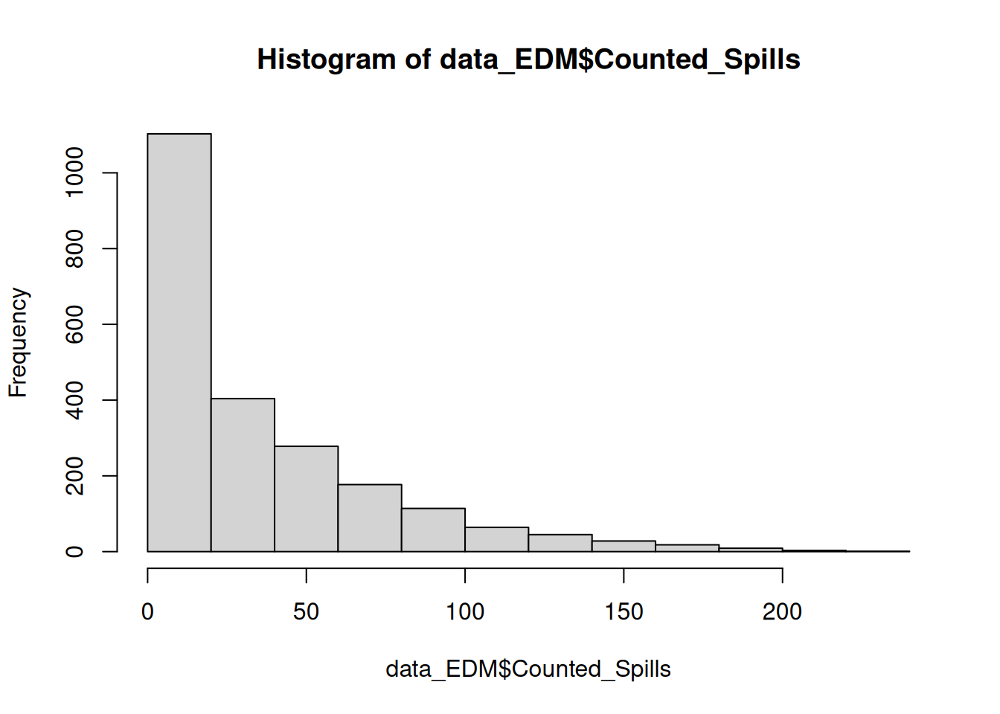

12 Data processing and exploration
12.1 Converting units
Hopefully, you noticed that the total duration of spills for each site is calculated in seconds. It would be much more intuitive to be able to analyse that variable in hours.
You can create a new column with data from a calculation using existing columns.
- You simply need to use the
<-operator to create the new column, like you would with any new variable (e.g.a <- 3). - Any maths calculation that R can do on a single number, it can also do on a vector or data frame column (in fact, a data frame column is just a plain old vector in a funny hat).
Tip! Remember that you can refer to columns in a data frame using the $, and use the autocomplete menu to select from existing columns.
There are 3600 seconds in one hour. Therefore, to convert the total spill duration from seconds to hours, you will need to divide the data in the old column by 3600.
Use the code below as a template.
NOTE: you will need to substitute mydf and the column names with the names of your data frame and column names.
# Convert spill duration units from secs to fractional hours
mydf$new_column_hours <- mydf$old_column_secs / 360012.2 Visualising data with histograms
For a single variable, histograms plot the values of that variable on the x-axis and the the frequency that each value is observed on the y-axis. The values are grouped into “bins”, e.g.
- 0 ≤ x ≤ 5
- 5 < x ≤ 10
- 10 < x ≤ 15
- etc.
Histograms are a great way to visualise data to help you understand the most common values and the spread of a variable.
You can make nice, fancy looking histograms with the ggplot() function. However, here we will use the base R hist() function because we just want to see the data - not put it in a report.
The code below makes a histogram of the Counted_Spills column.
Type it into your script, then add three more lines of code to make histograms for the following additional variables:
- long-term spill average
- spill duration
- percent of time operational
Run all four lines to examine the data.
hist(data_EDM$Counted_Spills)
Tips:
You can navigate back and forth through different plots that you’ve made in the
Plotspane using the back and forward errors in the top left corner.R will automatically add the name of the data frame and column as the histogram title, so you can see which data each plot belongs to.
Use the histograms to answer the following questions.
Questions:
For each of the four variables, what is the most commonly observed value (or bin of values)?
For each of the four variables, what is the largest observed value (or bin of values)?
Do all the variables have the same general shape? Which variables have the longest tails? (i.e. values that stretch out the most to the right or left away from the most common values?)
How does the number of spills in 2024 compare to the long-term average?
12.3 Logical comparisons in R
Most programming languages (including R) use a standard set of operators to compare values.
These comparisons or tests will output something called a “boolean” value that is either TRUE or FALSE.
-
x == ytests if x and y are equal -
x != ytests if x and y are not equal -
x < ytests if x is less than y -
x > ytests if x is greater than y -
x <= ytests if x is less than or equal to y -
x >= ytests if x is greater than or equal to y
Type out the following code below and run it line by line while looking at the output in your console.
Make sure that you understand how each line is working.
1 == 2
1 != 2
1 < 2
# Create a vector
test_vec <- c(1, 2, 3, 4, 5)
test_vec == 3
test_vec != 3
test_vec < 3
test_vec > 3
test_vec <= 3
test_vec >= 3R also has another operator that can be used to determine if a specific value is found within a vector: %in%.
In the next section, we’ll show you how the %in% operator can be really useful.
For now, type and run the code below to show yourself how it works.
12.4 Filtering data
I used one of the sewage monitoring websites (linked in the {#intro_wk3}) to find the unique site IDs for the 9 United Utilities discharge sites that are located within central Lancaster and discharge in the Lune River:
- UUP00360
- UUP01608
- UUP01494
- UUP01211
- UUP00603
- UUP00604
- UUP00387
- UUP02160
- UUP01686
If you want to be able to easily extract the rows of data from these cites, the first step is to create a vector with these site IDs.
Type and run the code below to create this vector.
# Create vector of unique IDs for discharge sites in central Lancaster
EDM_vec <- c("UUP00360", "UUP01608", "UUP01494", "UUP01211", "UUP00603", "UUP00604", "UUP00387", "UUP02160", "UUP01686")Tip! Remember that each element in a vector must be separate by a comma!
Question: Why are each of the site IDs given in quotation marks?
Now that we have our vector of site IDs, we can use the %in% operator to filter for only the rows that match one of the elements in the vector.
We will use the filter() function, as shown below. This code:
- creates a new data frame called
data_EDM_LA… - using our original dataset (which I called
data_EDM), which is piped into… - the
filter()function, which is given the arguments to select rows withunique_IDvalues that match an element in our vectorEDM_vec
Type and run the code below. Make sure you understand what it is doing before you move on.
# Filter list by site unique ID - only central Lancaster sites
data_EDM_LA <- data_EDM |>
filter(Unique_ID %in% EDM_vec)Tip! Although we are using %in% for the filter() function here, you can also use any of the logical comparison operators (e.g. ==, !=, >, <, etc.) to filter your data.
For our comparison, we will also want to make a list that has all of the rows except those located in central Lancaster.
We can use very similar code - except this time we will add a !() nested within our filter() function. This will negate the selection (i.e. make all FALSE values into TRUE and vice versa), which will make it select all the rows that do not match any of the values in the vector, rather than those that do match one of the values.
12.5 Adding a location column
For the graphing that we want to do later, we will want to be able to tell R to use site location (i.e. central Lancaster or not) as a data grouping variable.
Therefore, it will be very helpful if we can add a location column to our two separate datasets and then add them back together into one data frame.
Tip! If you want to add a new column where every row has the same value (or change the values in an existing column to all have the same value), you can provide that value once and R will duplicate it for every row.
The code below will create a new column called location with the value "Lancaster" or "Non-Lancaster".
NOTE: You will need to change the data frame mydf to the correct names of your data frames for the Lancaster and non-Lancaster data, as appropriate.
mydf$location <- "Lancaster"
mydf$location <- "Non-Lancaster"12.6 Combining data frames
You can combine data frames using the rbind() function (it stands for “row bind”).
Warning! The rbind() function will only work if both of your data frames have the same number of columns - otherwise you will get an error.
Type and run the code below to combine the two data frames.
data_EDM_all <- rbind(data_EDM_LA, data_EDM_rest)